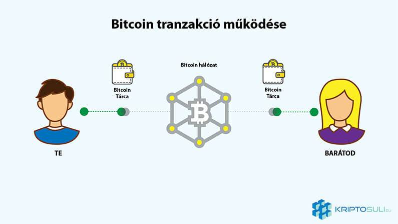
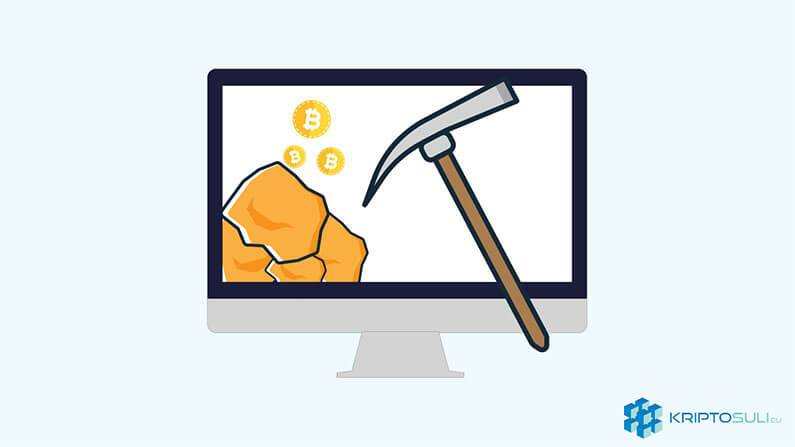
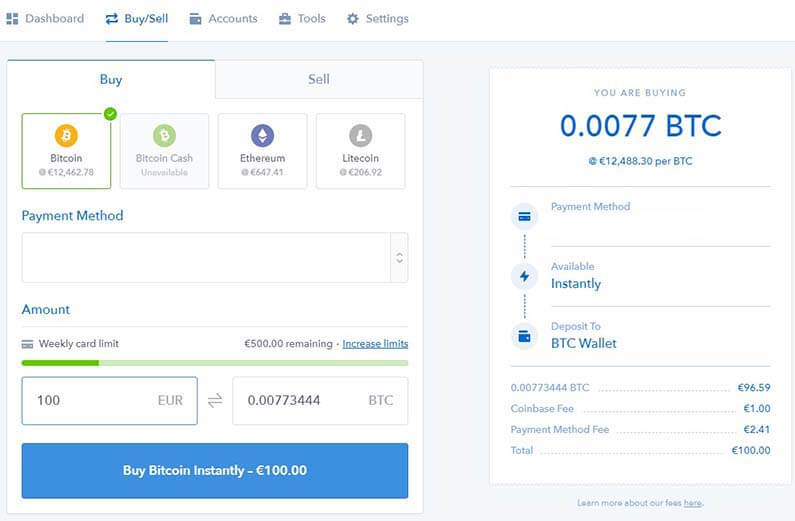
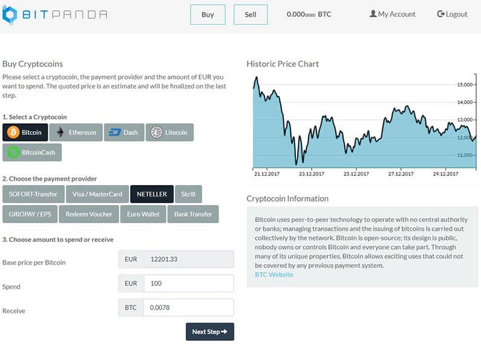

Mi az a Bitcoin? Útmutató kezdőknek

Bitcoin... egyre többet hallod ezt a szót az ismerősöktől, Facebook bejegyzésekből, vagy éppen Twitter-en találkoztál vele. Ha szeretnéd megtudni mi is az az egyre többet emlegetett Bitcoin, hogyan működik, hogyan vásárolhatsz, ez a cikk neked való. Továbbá megtudhatod, hol tárolhatod az értékes Bitcoin-okat.
Mi az a Bitcoin?
Bitcoin (BTC) 2009-ben látta meg a napvilágot mint a világ első kriptopénz-e. Satoshi Nakamoto néven ismert személy/személyek volt a feltalálója. A Bitcoin egy digitális valuta. Matematikailag, generálják amint számítógépek a hálózatban bonyolult feladatokat oldanak meg, ezt a folyamatot hívják "bányászatnak".
A Bitcoin decentralizált, ami azt jelenti, hogy nem irányítja egy kormány vagy központi bank. A tranzakciók „peer-to-peer” elven működik, tehát a tranzakciók közvetlenül a felhasználók között történik, egy közvetítő bank bevonása nélkül. Ezáltal csökkentve a tranzakciós díjakat és időket.
Bitcoin tranzakció
Ha kicsit bonyolultnak találod Bitcoin-t, nem vagy egyedül. Bitcoin, csakúgy mint a hagyományos pénz, egy csereeszköz. Értékkel bír, átválthatod forintra vagy vásárlásra is használhatod.
Ha szeretnél Bitcoin-t küldeni egy barátodnak, csak le kell másolnod a Bitcoin címét vagy a QR kódot leszkennelni. Beírod az összeget amit küldeni szeretnél, és rányomsz a „Küldés” gombra.
Ezután a tárcád a létrehozott tranzakciót elküldi a Bitcoin hálózatnak, amely ellenőrzi a tranzakciót, összecsoportosítja más tranzakciókkal egy blokkba, amit pedig hozzácsatol a blokklánchoz.
Bitcoin a blokklánc technológiára épül. A blokklánc egy hatalmas főkönyv ami minden eddigi Bitcoin tranzakciót tartalmaz. Bitcoin decentralizáltsága miatt a tranzakciókat önkéntesek, úgynevezett "bányászok" ellenőrzik és hitelesítik.
Mi az a "bányászat"?
Ahelyett, hogy egy központi szerver ellenőrizné a tranzakciókat, minden bányász ellenőrzi a tranzakciókat a hálózaton.
Ezek a bányászok nagyon bonyolult matematikai feladatokat oldanak meg számítógépek segítségével és az első amelyik sikeresen megteszi ezt, hozzáadja a megerősített tranzakciókat tartalmazó blokkot a főkönyvhöz.
Bitcoin beépített jutalmazás rendszere kompenzálja a sikeres bányászokat Bitcoin-al. Jelenlegi rendszer szerint blokkonként 12,5 Bitcoin a jutalom egy-egy blokkért. A matematikai feladatok egyre nehezebbek lesznek, ezért nagyon erős kifejezetten erre a célra készített hardvereket használnak bányászatra.
A Bitcoin bányászat 21 millió darabnál fog megállni, ennél többet nem lehet bányászni. Ez körülbelül 2040 környékén lesz. Jelenleg 17 millió van forgalomban.
Tranzakciós Díj:
Amikor létrehoznak egy tranzakciót, általában tranzakciós díjat is fizetni kell a bányászoknak, hogy azt a tranzakciót feldolgozzák. Ezek a díjak ösztönzik a bányászokat, hogy belerakják az újonnan készített (bányászott) blokkba a tranzakciót.
Ahogy a Bitcoin utalások mennyisége megnövekedett az elmúlt időben, egyre több tranzakciót kell feldolgozniuk a bányászoknak ugyanannyi idő alatt. Ezáltal egyre jobban feltömörülnek a tranzakciók. Ez arra sarkallta az embereket, hogy nagyobb tranzakciós díjakat fizessenek a bányászoknak (A bányászok azokat a tranzakciókat dolgozzák fel legelőször amelyeknek nagyobb a díja). Tehát minél nagyobb az utalás díja annál gyorsabban hajtják végre az utalást.
Fontos megjegyezni, hogy a Bitcoin összeg amit küldesz nem befolyásolja a díj kiszámítását. A tranzakció díját az adatmennyiség határozza meg. Tehát egy 250 byte nagyságú utalás ugyanannyiba, fog kerülni ha 0.001 Bitcoin-t vagy 10 Bitcoin-t tartalmaz.
Bitcoin előnyei:
- Legnagyobb előnye, hogy decentralizált. Sem a kormány, sem a bankok nem nyúlhatnak hozzá.
- Tranzakciók a felhasználók között történnek, nem kell 3. felet bevonni.
- Blokklánc biztonsága: Manapság a blokklánc az egyik legbiztonságosabb technológia ami létezik.
- Anomimítás: Bitcoin címek nincsenek emberek nevéhez kötve, viszont a blokklánc tranzakció története teljesen nyilvános.
Bitcoin hátrányai:
- Tranzakció idő és ár: Amíg nemrég ezeket az előnyökhöz soroltuk volna, addig a megnövekedett árral, és népszerűséggel jött a kellemetlen velejárója, hogy a tranzakciók, egyre hosszabbak és drágábbak lettek. Ezt viszont a jövőben új technológia alkalmazásával orvosolni fogják.
- Hatalmas ár ingadozás: Nem ritka, hogy 24 órán belül több ezer eurót is megy fel vagy le az ár.
- Használat: Habár folyamatosan bővül a használhatósága, de még mindig nagy a tér a fejlődésre.
- Amíg sok ember hallott Bitcoin-ról, kevesen értik igazán, hogy mi ez, vagy, hogy mire használható.
Hol tárolhatom a Bitcoin-jaimat?
Copay egy nagyszerű tárca lehet kezdőknek, asztali PC-n és mobilon egyaránt használható, nagyon könnyű felhasználói felülettel rendelkezik, amit minden kezdő hamar elsajátíthat.
A két legjobb hardver tárca is támogatja Ethereum-ot. Ledger Nano S és Trezor.
Részletesebb ismertetőt Bitcoin tárolásával kapcsolatban a kriptopénz tárcák menüpont alatt találsz.
Hogyan vehetek Bitcoin-t?
Most, hogy megtudtad mi az a Bitcoin (BTC), te sem szeretnél lemaradni, erről a hullámvasútról. A kérdés, hogy hogyan?
Több lehetőség is rendelkezésre áll, mint például a Bitcoin ATM vagy az online Bitcoin váltók. Továbbá LocalBitcoins ahol más személyekkel cserélheted hagyományos valutádat Bitcoin-ra.
A Bitcoin ATM-ek hasonlóan működnek, mint hagyományos társai. Készpénzt teszel be amiért digitális pénzt kapsz, a telefonodon található tárcára QR kód beolvasásával.
Másik lehetőség egy biztonságos, és kezdőbarát online kriptopénz váltó. Ezeken a weboldalakon hagyományos valutádat (általában USD vagy EUR) válthatod kriptopénzre.
Mire kell figyelni mielőtt csatlakozunk egy ilyen weboldalhoz:
- Megbízhatóság
- Díjak
- Fizetési opciók
- Verifikáció követelmények
- Földrajzi megkötések
- Váltási árfolyam
Kezdőknek ajánlott kriptopénz váltók:
Magyar forintért MrCoin.eu weboldala használható ahol gyorsan és egyszerűen beszerezhető Bitcoin.
Coinbase
Coinbase az egyik legismertebb weboldal Bitcoin vásárláshoz. A weboldal kezdőbarát, ami jelentősen megkönnyíti a kriptopénz beszerzését. A tranzakciós díjak tisztán látszanak a vásárlás folyamán, nincsenek elrejtett díjak.
Coinbase székhelye San Fransisco, USA-ban van, azonban fogadnak vásárlókat Magyarországról is. A cég 2012-ben lett alapítva.
Banki SEPA utalással feltöltheted a Coinbase számládat. Általában 2-5 nap* alatt érkezik meg a pénz. Illetve lehet hitelkártyával is fizetni, de csak akkor ha rendelkezik 3D biztonsági kóddal.
Bitcoin mellet lehetőséget biztosítanak az Ethereum, Litecoin és Bitcoin Cash vásárlásra is.
Elérhető nyelvek között szerepel Angol és Német.
*Mivel jelenleg ez a legnépszerűbb kriptopénz váltó a hatalmas forgalom miatt lehetnek akadozások, késések a ki- és befizetésben.
Itt regisztrálhatsz Coinbase-re!
BitPanda
BitPanda egy Ausztriában honos kriptopénz váltó. Ennél fogva teljes Európában használható, köztük Magyarországon is. Nagy előnye, hogy nagyon széles be- és kifizetési opciókat kínál. A weboldal kezdőbarát, nagyon egyszerűvé teszi a vásárlást. A tranzakciós díjakat nem külön jelzik hanem beleépítve az árba. SEPA utalás ingyenes (A Bitpanda részéről, az OTP 0,5%-ot felszámol).
SEPA utalás, 3D biztonsági kóddal ellátott bankkártya mellett, lehet Skrill-t és Neteller-t is használni a vásárlásnál, illetve számla feltöltésnél. Ezeknek a tranzakció ideje pár másodperc.
Elérhető kriptopénzek Bitcoin, Ethereum, Dash, Litecoin és Bitcoin Cash.
Támogatott nyelvek Angol és Német.
Itt regisztrálhatsz BitPanda-ra!
Záró gondolatok
Bitcoin annak ellenére, hogy a legöregebb kriptopénz, még mindig aránylag fiatal, hatalmas fejlődési tér áll előtte. Minél több ember szerez tudomást róla, annál nagyobb benne lesz a potenciál.
Mint a kripto világ zászlóshajója, fontos, hogy megértsük Bitcoin-t és ezáltal a kriptopénzek és blokklánc technológia kiválóságát.


2018. Január 05.